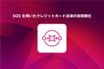
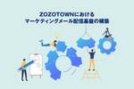
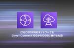

ZOZO TECH BLOG
https://techblog.zozo.com/
ZOZO TECH BLOG
フィード
Elastic Cloudの特権アカウント共用から脱却！ 15
15
ZOZO TECH BLOG
はじめに こんにちは、SRE部 検索基盤SREブロックの花房です。普段は、ZOZOTOWNの検索関連マイクロサービスにおけるQCD改善やインフラ運用を担当しています。 以前まで、検索基盤を支えるチームではElastic Cloudの特権アカウントをメンバーで共用していました。本記事では、2023年4月にリリースされたElastic CloudのRBAC（Role-Based Access Control）機能を活用して、特権アカウントの共用から脱却した取り組みについて紹介します。さらに、既存機能と組み合わせることで実現した、効率的な権限管理についても紹介します。 同様の課題を抱えている読者の方…
13時間前

SQSを用いたクレジットカード決済の非同期化 227
ZOZO TECH BLOG
こんにちは、カート決済部カート決済サービスブロックの林です。普段はZOZOTOWN内のカートや決済の機能開発、保守運用、リプレイスを担当しています。 弊社ではカートや決済機能のリプレイスを進めており、これまでにカート投入のキャパシティコントロールや在庫データのクラウドリフトを実現しています。 techblog.zozo.com techblog.zozo.com 本記事では新たにクレジットカード決済処理を非同期化したリプレイス事例を紹介します。 はじめに 背景・課題 非同期化のシステム構成 パターン1 - 完全非同期化パターン パターン2 - 非同期・同期切り替えパターン パターン3 - ポー…
2日前
ZOZOTOWNのマーケティングプラットフォームでのフロントエンドの取り組み 24
ZOZO TECH BLOG
はじめに こんにちは、MA部の林（@hayash__p）です。 私達のチームでは、メール、LINE、Push通知、サイト内お知らせなどでユーザにZOZOTOWNのセールや新着商品を紹介するといった、マーケティングに関わるシステムを開発しています。これまで、配信チャネルや配信内容ごとに個別最適化したシステムを開発していましたが、それらを一新したマーケティングプラットフォームを作ることになりました。新しいマーケティングプラットフォームであるZOZO Marketing Platform（以下、ZMP）の概要については以下のテックブログをご覧ください。 techblog.zozo.com 本記事では…
3日前
Pull Requestのレビュー負荷を軽減し、開発生産性を向上するためにチームで取り組んだこと 102
ZOZO TECH BLOG
はじめに こんにちは。WEARフロントエンド部Webチームの藤井です。私たちのチームでは、WEARのWebサイトのリプレイスと新規機能の開発を並行して進めています。これらの開発を推進する中で、Pull Requestのレビュー負荷を軽減し、開発生産性を向上させるための取り組みを行なってきました。本記事では、その中で効果的だった取り組みについてご紹介します。 目次 はじめに 目次 背景と課題 レビューの体制の薄さ スコープの広さ 仕様把握の負担 対応内容についての説明不足 処理の複雑性 仕様の抜け漏れ 動作確認の手間 課題解決に向けた取り組み レビュー体制の見直し Pull Requestを小さ…
5日前
バッチシステムのリアーキテクチャを繰り返して見えた設計の勘所 2
ZOZO TECH BLOG
はじめに こんにちは、検索基盤部の倉澤です。検索基盤部では、検索機能に必要なデータを生成するバッチシステムの開発や運用を担当しています。また、ユーザーのニーズやサービスの成長に合わせてリアーキテクチャを行うこともあります。今回は、リアーキテクチャを繰り返し行う中で見えてきたバッチシステムの内部設計の品質を高める・標準化するためのポイントを紹介します。 今回、バッチシステムの内部設計をソフトウェアのアーキテクチャ特性（品質特性とも呼ばれる）に基づいて説明します。 ソフトウェアのアーキテクチャ特性とは、非機能要件や品質特性と同じ意味を指しますが、「ソフトウェアアーキテクトの基礎 （Fundamen…
6日前
ZOZOTOWNのマス配信バッチのリプレイス 3
ZOZO TECH BLOG
はじめに こんにちは、MA部の中原です。 MA部ではメルマガやLINE、アプリプッシュ通知を配信するためのマーケティングオートメーションシステムを開発・運用しています。 2022年からこのマーケティングオートメーションシステムをリプレイスするためのプロジェクトをMA部で進めています。リプレイス後の新しいマーケティングプラットフォームを「ZOZO Marketing Platform（略称：ZMP）」と呼んでいます。ZMPの概要については以下のテックブログをご覧ください。 techblog.zozo.com 本記事では、マス配信バッチのリプレイスについてご紹介します。 目次 はじめに 目次 配信…
7日前

ZOZOTOWNにおけるマーケティングメール配信基盤の構築 49
ZOZO TECH BLOG
はじめに こんにちは、MA部の松岡（@pine0619）です。MA部ではマーケティングオートメーションシステムの開発・運用に従事しています。 ZOZOTOWNでは、マーケティングオートメーションシステム（以下、MAシステム）を使い、メールやLINE、アプリプッシュ通知といったチャネルへのキャンペーンを配信しています。 MA部では、複数のMAシステムが存在しており、MAシステムそれぞれに各チャネルへの配信ロジックが記述されていました。これにより、現状の運用保守ならびに今後の改修コストが高いかつ、使用している外部サービスのレートリミットの一元管理が出来ていないなどの問題を抱えていました。そのため、…
8日前

ZOZOTOWNのネットワークをDirect Connect 10Gから100Gに移行した話 64
ZOZO TECH BLOG
はじめに こんにちは、技術本部SRE部フロントSREブロックの柳田です。オンプレミスとクラウドの構築・運用に携わっています。 ZOZOTOWNでは、既存システムのリプレイスプロジェクトを進行中です。リプレイス過渡期の現在、オンプレミスのネットワークとAWSのデータセンターを直接専用線で接続し、安定した高速通信を実現するDirect Connect（以降、DX）を利用しています。各サービスのマイクロサービス化に伴い、オンプレミスとクラウド間の通信量が増えた為、DX10Gの回線が逼迫する問題に直面しました。 本記事では、この回線逼迫の課題をどのように解決したかについて紹介します。
9日前
ZOZOTOWN検索における精度評価手法の運用で見えた課題とその改善アプローチ 39
ZOZO TECH BLOG
こんにちは。検索基盤部の橘です。検索基盤部では、ZOZOTOWNのおすすめ順検索の品質向上を目指し、機械学習モデル等を活用しフィルタリングやリランキングによる検索結果の並び順の改善に取り組んでいます。 ZOZOTOWN検索の並び順の精度改善の取り組みについては以下の記事をご参照ください。 techblog.zozo.com 検索基盤部では新しい改善や機能を導入する前にA/Bテストを行い効果を評価しています。A/Bテストの事前評価として、オフラインの定量評価と定性評価を実施しています。これらの評価によりA/Bテストの実施判断をしています。 おすすめ順検索のフィルタリング処理の効果検証として導入し…
10日前
検索サジェストにおける多様性評価指標とゴール指標の相関について 33
ZOZO TECH BLOG
はじめに こんにちは、検索基盤部の広渡です。検索基盤部では、検索クエリのサジェスト（以下、サジェスト）の改善を行なっています。ここでサジェストは一般的に「Query Auto Completion」と呼ばれる、検索クエリを入力した際に入力の続きを補完したキーワードを提示する機能を指します。 ZOZOTOWNにおいては検索クエリを入力したとき、最大10件の検索クエリのサジェスト（以下、サジェストリスト）が表示されます（なお、ランキングを考慮しない場合はサジェスト集合と呼ぶこととします）。また、サジェストリストのランキングはユーザーの行動ログを用いて計算されたスコアによって決定されます。サジェスト…
13日前
ChatOpsによる運用作業の自動化 69
ZOZO TECH BLOG
はじめに こんにちは、技術本部SRE部カート決済SREブロックの遠藤・金田です。 普段はSREとしてZOZOTOWNのカート決済機能のリプレイスや運用を担当しています。本記事では自作のコマンドラインツールをSlack + AWS Chatbot + AWS Lambdaを使用してChatOps化した事例をご紹介します。「日々の運用業務をコマンドラインツールを実装して効率化したものの今ひとつ広まらない」「非エンジニアにも使えるようにしたい」と考えている方の参考になれば幸いです。 目次 はじめに 目次 背景・課題 ChatOpsとは AWS ChatBotとは 構成 AWS ChatBot チャッ…
14日前

マーケティングを加速させろ！ZOZO Marketing Platform(ZMP)の紹介
ZOZO TECH BLOG
こんにちは、MA部の齋藤（@kyoppii13）です。 ZOZOTOWNでは、プッシュ通知やLINE、メールでのキャンペーン配信を実施しています。キャンペーン配信の例としては、お気に入り商品の在庫数が少なくなったときにプッシュ通知を送るといったものです。LINEやメールといった配信チャネル以外にも、キャンペーンごとにセグメントや実施タイミングも様々で、システムも配信キャンペーンの種類によって複数存在している状況でした。そのため運用保守のコストが大きくなっていました。また、キャンペーンの内容を変更するために開発側での工数が発生している状況でした。 そこでキャンペーン配信を効率的に実施するため社内…
15日前
OpenCTIをSentinelに食わせてみた
ZOZO TECH BLOG
はじめに こんにちは、CISO部の兵藤です。日々ZOZOの安全のためにSOC対応を行なっています。 本記事ではサイバー脅威インテリジェンスプラットフォーム「OpenCTI」からMicrosoft Sentinelへの脅威インテリジェンスの取り込みについて紹介します。また、この内容については以下の「Azureで織りなすOpenCTI構築」に続く内容となっています。 techblog.zozo.com 目次 はじめに 目次 背景と概要 構築 連携に使用するプレイブック プレイブックを使用するための準備 Sentinel側のデータコネクタ SSLサーバー証明書 アクセス制御 インジケータの登録 Se…
16日前
AWSで実践するカオスエンジニアリング 〜ZOZOMOでの取り組み〜
ZOZO TECH BLOG
AWS環境でカオスエンジニアリングを実施しました。意図的に障害を発生させることで得られた知見をご紹介します。
20日前
AWS CDKで構築するイベント駆動型アーキテクチャの実装戦略
ZOZO TECH BLOG
イベント駆動型アーキテクチャにおけるリソース管理面での課題と、AWS CDKを活用した解決策をご紹介します。
21日前
dbt導入によるデータマート整備
ZOZO TECH BLOG
はじめに こんにちは、ML・データ部推薦基盤ブロックの栁澤（@i_125）です。私はZOZOのデータ基盤におけるデータガバナンス強化を実現するために、Analytics Engineerとして複数の部門を跨ぐプロジェクトチームに参加しています。本記事ではZOZOにおけるデータガバナンス上の課題と、その課題の解決策の1つとしてdbtを導入した話をご紹介します。
23日前
情報検索の評価指標の弱点と選択バイアスを考慮した改善アプローチ
ZOZO TECH BLOG
こんにちは。検索基盤部の山﨑です。検索基盤部では、ZOZOTOWNの検索機能の改善を目的とした施策の有効性をA/Bテストで検証しています。 A/Bテストは、新たな施策の有効性を評価する手法として信頼性の高い手法ではあるものの、下記のような制約があります。 統計的に有意な差が出るためには、多くのユーザーからのフィードバックが必要である 比較手法を実際のユーザーに提示するため、ユーザー体験に悪影響を与えるリスクがある これらの制約から、実験したい全ての施策をA/Bテストで検証することは困難なため、事前に有効な可能性が高い施策に絞った上でA/Bテストに臨むことが大切です。 事前に有効な可能性が高いこ…
1ヶ月前
NRF 2024 Retail's Big Show 参加レポート
ZOZO TECH BLOG
はじめに こんにちは、ZOZOMO部OMOバックエンドブロックの中島です。普段はZOZOMO店舗在庫取り置きというサービスの開発を担当しています。 2024年1月14日から16日の3日間にかけてニューヨークで開催された「NRF 2024: Retail's Big Show」に初めて現地参加してきました。 前半はNRF Retail's Big Showの概要と関連する情報、後半はFashion TechやRetail Techを中心にお伝えします。NRF 2024全体の概要については、NRF 2024 Event Recapなどをご覧ください。
1ヶ月前
検証の概要とデータを分けることで、新規スタッフの引き継ぎがスムーズになった話
ZOZO TECH BLOG
はじめに こんにちは、計測プロデュース部の歌代です。 私たちはZOZOFITやZOZOMATといった計測系プロダクトの開発PM、データ収集、精度検証などサービス構築から、UI/UXの分析・評価など幅広く業務を行っております。 今回は私たちのチームが抱えていた課題と、対応策として行った工夫についてご紹介します。
1ヶ月前
GPT-4によってメディアサイトの翻訳を実現！効率的な翻訳に至るまでの開発秘話
ZOZO TECH BLOG
こんにちは、ZOZO NEXTでFashion Tech Newsの開発を担当している木下です。先日、弊社が運営するオウンドメディアのFashion Tech Newsにおいて英語版が公開されました。本記事では、機械翻訳サービスの比較検討、翻訳精度を向上するための調整、スムーズな翻訳を実現する仕組みについてご紹介します。比較検討の結果GPT-4を採用したため、GPT-4の本番運用を検討されている方の参考にもなるかと思います。 fashiontechnews.zozo.com
1ヶ月前
アイテムレビュー機能をZOZOTOWN Androidチームはどう開発したか
ZOZO TECH BLOG
はじめに こんにちは、ZOZOTOWN開発1部Android2ブロックの井上晃平（@ねも）です。普段はZOZOTOWN Androidアプリの開発を担当しています。ZOZOTOWN Androidチームでは、以前から商品に対して口コミや評価を投稿・閲覧できる、アイテムレビュー機能を開発していました。そして、2023年11月29日に晴れてアイテムレビュー機能がリリースされました。 アイテムレビュー機能を設計・開発していく中で見えてきた課題を、解決策とともにご紹介します。 そもそもアイテムレビュー機能のことを知りたいという方は、プレスリリースで機能紹介をしているので、あわせてご覧ください。
1ヶ月前
深層距離学習における平均場理論
ZOZO TECH BLOG
はじめに こんにちは、ZOZO研究所AppliedMLチームの古澤です。私たちは商品画像の検索の基礎として、深層距離学習という技術を研究しています。本記事では、本研究所からICLR2024に採択された「Mean Field Theory in Deep Metric Learning」という研究について紹介します。対象読者としては、機械学習系のエンジニアや学生を想定しています。
1ヶ月前
【イベントレポート】Kubernetes活用の手引き 私たちの基盤構築・運用事例 Lunch LT
ZOZO TECH BLOG
はじめに こんにちは。ブランドソリューション開発本部WEARバックエンド部SREブロックの山岡（@ymktmk）です。 2024年1月25日にFindy社によるオンラインイベント「Kubernetes活用の手引き 私たちの基盤構築・運用事例 Lunch LT」が開催されました。このイベントでは、株式会社メルカリさん、株式会社MIXIさん、LINEヤフー株式会社さんから一人ずつ、弊社からも私がLTをしてきましたので、こちらのブログでも報告いたします。 findy.connpass.com 登壇内容 今回のイベントでは、以下のような方をターゲットとして、各社からKubernetesに関する取り組み…
2ヶ月前
BigQueryを使った集計バッチの費用をActive Metadata Managementの知見を活かして4割減らした話
ZOZO TECH BLOG
初めまして。MLデータ部データ基盤ブロックの小泉です。 本記事ではGartner社から提唱されたActive Metadata Managementに着目し、BigQueryのCompute費用を削減した方法についてご紹介します。 目次 目次 Active Metadata Managementとは 結局どんなことを行なったのか、ざっくりまとめ Compute費用のpricing modelとReservationについて pricing model Reservation Metadataを使用して最安値のpricing modelを求める方法 マート集計クエリ実行時、pricing mod…
2ヶ月前
ZOZOTOWN カート決済機能リプレイス Phase2 〜 在庫データのクラウドリフト
ZOZO TECH BLOG
こんにちは。カート決済部カート決済基盤ブロックの斉藤とSRE部カート決済SREブロックの飯島です。普段はZOZOTOWNカート決済サービスのリプレイスに携わっています。 弊社はモノリスからマイクロサービスへのリプレイスを進めており、カート決済サービスもその一環としてリプレイスを進めています。 よろしければ、カートリプレイスPhase1としてカート投入リクエストのキャパシティコントロールを実現させた事例もご覧ください。 techblog.zozo.com 本記事ではリプレイスの中でも、カートリプレイスPhase2としてZOZOTOWNで扱う在庫データをクラウドリフトした事例を紹介します。 はじめ…
2ヶ月前
クーポン推薦モデルとシステム改善の取り組み
ZOZO TECH BLOG
ZOZOTOWNではクーポン推薦を実現するために機械学習モデルとシステムを運用しています。その改善の取り組みについて、課題や解決策を踏まえてご紹介します。
2ヶ月前
【イベントレポート】「ZOZO Tech Meetup - Android」を開催しました！
ZOZO TECH BLOG
1月23日に「ZOZO Tech Meetup - Android」と題したAndroidに特化したオンラインイベントを開催しました。
2ヶ月前
ZOZOTOWN AndroidにおけるViewModelの実装
ZOZO TECH BLOG
はじめに こんにちは、ZOZOTOWN開発2部Androidブロックの大江です。普段はZOZOTOWN Androidの開発を担当しています。 ZOZOTOWN Androidはリリースから10年以上経過し、現在のソースコードは9年近く開発されています。そのため、複数のアーキテクチャが混ざった状態になっていて、開発速度の向上を妨げる要因になっていました。 そこで今ZOZOTOWNにある3つのAndroidブロックから、それぞれテックリードなどの代表者を立て、アーキテクチャを統一するための座談会を週に1度開催しています。その座談会の成果としてまずはViewModel部分の実装方針を決めることがで…
2ヶ月前
チームで挑む、ZOZOTOWN iOSでのSwiftUI導入実践話
ZOZO TECH BLOG
こんにちは、ZOZOTOWN開発1部iOSブロックの荻野です（@juginon）。 WWDC19でSwiftUIが発表されてから今年で5年になりますが、みなさんの携わっているプロジェクトではSwiftUIを使っていますか。ZOZOTOWN iOSチームでは、2023年11月にリリースしたアイテムレビュー機能1へ向けSwiftUIを積極的に導入する方針を定め、新規画面及びUI要素ではSwiftUIでの実装に取り組みました。 巨大なプロジェクトであるZOZOTOWN iOSにSwiftUIをどのように導入していったのか？ 本記事では、実際にプロダクトコードに導入したことで見えた問題点、そこで得た知…
2ヶ月前
CES 2024 参加レポート - コロナ禍以前の活況を取り戻した CES
ZOZO TECH BLOG
1月9日から12日の4日間に渡ってラスベガスで開催された #CES2024 に参加しました。主にXR TechとFashion Tech・Beauty Techについてお伝えします。
2ヶ月前